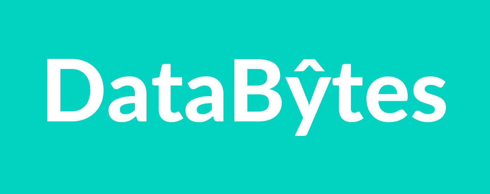

Built an interactive Tableau dashboard on 6,000+ passenger reviews, enabling insights into
regional satisfaction, trends over time, and aircraft-level performance. Includes dynamic
filters by traveler type, seat class, and geography.

SQL‑driven ETL into four tables (cases, deaths, vaccinations, populations), exploratory analysis,
then Tableau visuals for trend monitoring and regional comparisons.
End-to-end Power BI project built on 700–800 real survey responses: data cleaning, DAX-based data
modeling, and interactive dashboards showcasing respondent segments and KPIs.

Explored global COVID-19 data with T-SQL in SSMS: infection and mortality rates, vaccination
progress, and per-capita impact. Built queries with joins, CTEs, and window functions to create
views for BI dashboards.

Analyzed 5,000+ movies with Pandas and visualization libraries to uncover correlations between
budget, ratings, runtime, and revenue. Performed feature engineering, exploratory analysis, and
storytelling with charts.

Transformed messy Nashville housing data into a reliable dataset by standardizing dates,
resolving missing values, normalizing fields, and removing duplicates with window functions -
ensuring accuracy for downstream analytics and reporting.
Developed a Python-based Amazon web scraper using BeautifulSoup and Requests
to extract product titles, prices, and ratings.
Integrated an automated email alert system that notifies the user whenever
a product’s price drops below a specified threshold.
Data is cleaned and stored using pandas for easy tracking and analysis.

Designed and implemented RESTful APIs for an IoT-driven wildlife monitoring platform using
FastAPI,
MongoDB, and Docker. Built a secure Two-Factor Authentication (2FA) system with Twilio
integration
for OTP generation and mobile delivery, including UUID-based verification and 5-minute expiry
logic.
Developed and tested endpoints via Swagger UI, optimized Docker container builds, and managed
API
documentation and deployment workflows.
Developed a personalized news recommendation system that predicts user interests even for
anonymous users.
Implemented CSR Sparse Matrix–Vector Multiplication (SpMV) and Proximity Processing algorithms
for efficient
text similarity computation, and a Bayesian Framework for adaptive user interest prediction.
Built the full-stack application with Flask (backend) and React (frontend), integrated
third-party News APIs,
infinite scrolling, Google/Facebook login, and dynamic category filtering for a seamless user
experience.
Built an end-to-end data engineering pipeline in Snowflake Cloud for India’s
Air Quality Index (AQI) data from the Government of India’s Open Data API
managed by the CPCB. Designed a multi-layered Snowflake architecture
(Stage · Clean · Consumption · Publish) using Dynamic Tables, Star Schemas, Snowpark Python UDFs,
and Tasks for automated ingestion and transformation.
Developed Streamlit dashboards hosted natively on Snowflake to visualize
pollutant trends (PM2.5, PM10, NO2, SO2, CO, NH3, O3) with geo-spatial insights
using CARTO / OpenStreetMap.


{kind=link}
{kind=link}
{kind=link}